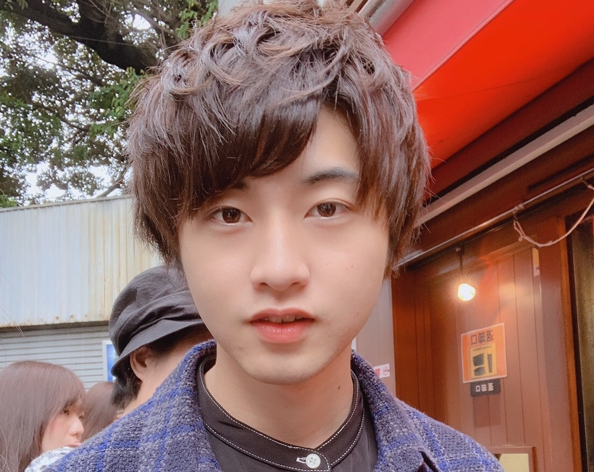

プロフィール

中部大学大学院 工学研究科 情報工学専攻 戸田響生です.
大学院では,コンピュータビジョンの分野の研究を行っています.
趣味は，Web系プログラミング,アイドル,ファッション,タピオカ,お菓子,料理作りです.
趣味については日々Instagramに投稿しています.
ファッションもWEARに投稿しています.
また,タピオカについてまとめたブログも書いているので下にブログを載せておきます.
よろしくお願いします.